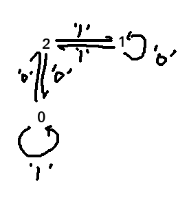
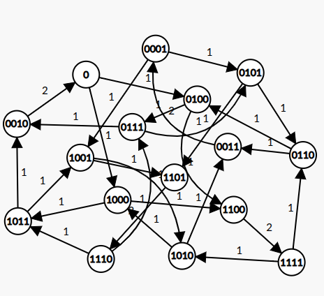

键入以搜索…
匹配算法：把输入按空格拆分，单独匹配每一段输入（不区分大小写，仅匹配文章文本内容），输出取或后的结果。
模糊搜索似乎很难搞，目前没有相关打算。
键入以搜索…
匹配算法：把输入按空格拆分，单独匹配每一段输入（不区分大小写，仅匹配文章文本内容），输出取或后的结果。
模糊搜索似乎很难搞，目前没有相关打算。
分治树
线段树不能维护背包的原因是 pushup 复杂度太高（单次 \(O(V^2)\)）。如果确定了要询问的体积（单点 / 区间），能否降低单次合并的复杂度？
想到 贪玩蓝月 这个题，如果存在一个 \(mid\) 在询问区间内，从 \(mid\) 往两侧预处理对应的单侧前后缀答案，最后询问的时候复杂度就比较低
考虑分治，这样就可以使得对于任意一个询问，总存在一段分治区间将其包含，且分治区间的 \(mid\) 在询问内。
这样就可以单 log 预处理之后，比较快地查询。
基于这样的预处理形式，所以只能支持静态问题。
空间复杂度为 \(O(n\log n)\)，有一些降空间的实现技巧，这里不赘述
实现起来会发现很像链上的点分，也会联想到 星白，只是这个题更像是 dsu on tree。
对于树上问题，在 uoj 上翻到一个 \(O(n\log n)\) 预处理，\(O(1)\) 单次查询的做法 link
实际上并不用猫树，只需要点分树预处理，欧拉序求 LCA 即可。
https://www.luogu.com.cn/problem/P6240
背包合并的 单点询问 和 前缀询问 都是 \(O(V)\) 的，任意区间 是 \(O(V\log V)\) 的，也支持取模，像贪玩蓝月那样的
然后就比较板了
发现空间不太对，需要把询问离线下来，其实就是经典分治
#include <bits/stdc++.h>
int main() {
#ifdef ONLINE_JUDGE
std::ios::sync_with_stdio(false);
std::cin.tie(nullptr), std::cout.tie(nullptr);
#else
std::freopen(".in", "r", stdin);
std::freopen(".out", "w", stdout);
const auto stime = std::chrono::steady_clock::now();
#endif
int n, q;
std::cin >> n >> q;
std::vector<int> v(n + 1), w(n + 1);
for (int i = 1; i <= n; ++i)
std::cin >> v[i];
for (int i = 1; i <= n; ++i)
std::cin >> w[i];
n = 1 << (std::__lg(n) + 1);
v.resize(n), w.resize(n);
struct node { int i, l, m; };
std::vector<int> res(q + 1);
std::vector<std::vector<std::vector<node> > > t(17, std::vector<std::vector<node> > (n + 1));
for (int i = 1, l, r, m; i <= q; ++i) {
std::cin >> l >> r >> m;
if (l == r)
res[i] = (m >= v[l] ? w[l] : 0);
else {
int d = std::__lg(l ^ r);
t[d][r].push_back({ i, l, m });
}
}
std::vector<std::array<int, 201> > f(n + 1);
std::function<void(int, int)> calc = [&](int l, int r) {
int d = std::__lg(r - l + 1) - 1;
if (l == r)
return;
int mid = (l + r) >> 1;
calc(l, mid), calc(mid + 1, r);
for (int i = 0; i <= 200; ++i)
f[mid][i] = (i >= v[mid] ? w[mid] : 0);
for (int i = mid - 1; i >= l; --i)
for (int j = 0; j <= 200; ++j) {
f[i][j] = f[i + 1][j];
if (v[i] <= j)
f[i][j] = std::max(f[i][j], f[i + 1][j - v[i]] + w[i]);
}
for (int i = 0; i <= 200; ++i) {
f[mid + 1][i] = (i >= v[mid + 1] ? w[mid + 1] : 0);
for (auto [id, l, m] : t[d][mid + 1])
if (i <= m)
res[id] = std::max(res[id], f[mid + 1][i] + f[l][m - i]);
}
for (int i = mid + 2; i <= r; ++i)
for (int j = 0; j <= 200; ++j) {
f[i][j] = f[i - 1][j];
if (v[i] <= j)
f[i][j] = std::max(f[i][j], f[i - 1][j - v[i]] + w[i]);
for (auto [id, l, m] : t[d][i])
if (j <= m)
res[id] = std::max(res[id], f[i][j] + f[l][m - j]);
}
return;
};
calc(0, n - 1);
for (int i = 1; i <= q; ++i)
std::cout << res[i] << '\n';
#ifndef ONLINE_JUDGE
std::cerr << std::fixed << std::setprecision(6) << std::chrono::duration<double> (std::chrono::steady_clock::now() - stime).count() << "s\n";
#endif
return 0;
}https://www.luogu.com.cn/problem/P8885
规范称呼：好子序列、好子串、好整串。
考虑不含 ? 的好子串判定，朴素 DP，令
\(f_{i,0/1}\) 表示 DP 到 \(i\)，子序列末尾为 \(0/1\) 时的子序列数量奇偶性。有：
\[ f_{i,0}=\begin{cases} f_{i-1,0}+f_{i-1,1}+1&a_i=0\\ f_{i-1,0}&a_i=1 \end{cases},\\f_{i,1}=\begin{cases} f_{i-1,1}&a_i=0\\ f_{i-1,0}+f_{i-1,1}+1&a_i=1 \end{cases} \]
观察发现 \(f_{0},f_{1}\) 中只有至多一个为 \(1\)。令 \(f_2\) 为一当且仅当 \(f_0,f_1\) 均不为 \(1\)。考虑 \(1\) 所在位置，建立 DFA：

如需加入 ?，转化为
NFA。注意到只关心每个点上指针数量的奇偶性，故压缩为 \({c_0,c_1,c_2}\)
记录。考虑对好子串计数。每次在 \(2\) 处加入一个新的 \(1\)
表示空串，再令所有指针移动一步，并对当前点结尾的子串数量计数，也即 \(f_{a_i}\)。即完成对好子串的计数。
考虑进一步 DP of DP，将计数变量 \(tot\) 的奇偶性放入状态。初始为 \(0,0,0,0\)，转移 \(dp_{f0,f1,f2,tot}\to
dp_{f2\oplus1,f1,f0,tot\oplus f0}\)，最后在 \(*,*,*,1\) 查答案。状态数共为 \(2^4=16\)，使用 DDP
维护动态询问即可。由于矩阵略大，需要用猫树替换线段树。然后就可以得到一个会
TLE 80 的做法（注意 ? 的转移矩阵系数可能为 2）。
#include <bits/stdc++.h>
const int mod = 998244353;
struct mat {
long long a[16][16];
long long* operator[] (const int q) {
return a[q];
}
mat() {
return;
}
mat operator* (mat &q) const {
mat res;
for (int i = 0; i < 16; ++i)
for (int k = 0; k < 16; ++k) {
auto s = 0ll;
for (int j = 0; j < 16; ++j)
s += a[i][j] * q[j][k];
res[i][k] = s % mod;
}
return res;
}
mat& operator*= (mat &q) {
return *this = *this * q;
}
} m0, m1, ma;
int main() {
#ifdef ONLINE_JUDGE
std::ios::sync_with_stdio(false);
std::cin.tie(nullptr), std::cout.tie(nullptr);
#else
std::freopen(".in", "r", stdin);
std::freopen(".out", "w", stdout);
const auto stime = std::chrono::steady_clock::now();
#endif
for (int f0 = 0; f0 <= 1; ++f0)
for (int f1 = 0; f1 <= 1; ++f1)
for (int f2 = 0; f2 <= 1; ++f2)
for (int tot = 0; tot <= 1; ++tot) {
m0[(f0 << 3) + (f1 << 2) + (f2 << 1) + tot][((f2 ^ 1) << 3) + (f1 << 2) + (f0 << 1) + (tot ^ f0)] = 1ll;
ma[(f0 << 3) + (f1 << 2) + (f2 << 1) + tot][((f2 ^ 1) << 3) + (f1 << 2) + (f0 << 1) + (tot ^ f0)] = 1LL;
m1[(f0 << 3) + (f1 << 2) + (f2 << 1) + tot][(f0 << 3) + ((f2 ^ 1) << 2) + (f1 << 1) + (tot ^ f1)] = 1ll;
++ma[(f0 << 3) + (f1 << 2) + (f2 << 1) + tot][(f0 << 3) + ((f2 ^ 1) << 2) + (f1 << 1) + (tot ^ f1)];
}
int n, n1;
std::cin >> n;
n1 = 1 << (std::__lg(n + 1) + 1);
std::vector<char> a(n + 1);
for (int i = 1; i <= n; ++i)
std::cin >> a[i];
std::vector<mat> f(std::vector<mat> (n + 1));
auto askmat = [&](char t) -> mat& {
if (t == '0')
return m0;
if (t == '1')
return m1;
return ma;
};
int m;
std::cin >> m;
std::vector<long long> res(m + 1);
std::vector<std::vector<std::vector<std::pair<int, int> > > > u(std::__lg(n1), std::vector<std::vector< std::pair<int, int> > > (n + 1));
for (int i = 1, l, r; i <= m; ++i) {
std::cin >> l >> r;
mat k;
if (l == r) {
k = askmat(a[l]);
auto sum(0ll);
for (int s = 0; s < 8; ++s)
sum += k[0][(s << 1) + 1];
res[i] = sum % mod;
}
else {
int d = std::__lg(l ^ r);
u[d][r].emplace_back(l, i);
}
}
std::function<void(int, int)> calc = [&](int l, int r) {
if (l == r)
return;
int d = std::__lg(r - l + 1) - 1, mid = (l + r) >> 1;
calc(l, mid), calc(mid + 1, r);
if (mid <= n && mid) {
f[mid] = askmat(a[mid]);
for (int i = mid - 1; i >= l && i; --i)
f[i] = askmat(a[i]) * f[i + 1];
}
if (mid + 1 <= n) {
f[mid + 1] = askmat(a[mid + 1]);
for (auto [l, id] : u[d][mid + 1]) {
auto sum(0ll);
auto k(f[l] * f[mid + 1]);
for (int s = 0; s < 8; ++s)
sum += k[0][(s << 1) + 1];
res[id] = sum % mod;
}
for (int i = mid + 2; i <= r && i <= n; ++i) {
f[i] = f[i - 1] * askmat(a[i]);
for (auto [l, id] : u[d][i]) {
auto sum(0ll);
auto k(f[l] * f[i]);
for (int s = 0; s < 8; ++s)
sum += k[0][(s << 1) + 1];
res[id] = sum % mod;
}
}
}
return;
};
calc(0, n1 - 1);
for (int i = 1; i <= m; ++i)
std::cout << res[i] << '\n';
#ifndef ONLINE_JUDGE
std::cerr << std::fixed << std::setprecision(6) << std::chrono::duration<double> (std::chrono::steady_clock::now() - stime).count() << "s\n";
#endif
return 0;
}观察 ? 的转移矩阵，发现其实很稀疏，有效边只有 28 条

那么完全可以抛弃矩阵这个概念，返璞归真用线性 DP 解决；枚举中间相接的位就可以合并。
实际上另一种更数学的理解方式是在左侧乘一个 \([1,0,0,\cdots,0]\) 就可以把左边的矩阵转化成向量；通过枚举中间相接的位，相当于在 \(mid\) 处乘一个 \([0,0,\cdots,0,1,0,\cdots,0]\) 的向量，右边的矩阵就也转化成了向量。接着，由于矩阵很稀疏，只有 28 个位置有值，故可以手动转移。
这样就可以少一个 \(O(s)\)，可以通过。
贺了 @spdarkle 的代码，但跑得没他快
@Rosmist 又在表演卡常技能了，勇夺最优解
#include <bits/stdc++.h>
const int mod = 998244353;
int main() {
#ifdef ONLINE_JUDGE
std::ios::sync_with_stdio(false);
std::cin.tie(nullptr), std::cout.tie(nullptr);
#else
std::freopen(".in", "r", stdin);
std::freopen(".out", "w", stdout);
const auto stime = std::chrono::steady_clock::now();
#endif
std::vector<int> m0(16), m1(16);
for (int f0 = 0; f0 <= 1; ++f0)
for (int f1 = 0; f1 <= 1; ++f1)
for (int f2 = 0; f2 <= 1; ++f2)
for (int tot = 0; tot <= 1; ++tot) {
m0[(f0 << 3) + (f1 << 2) + (f2 << 1) + tot] = ((f2 ^ 1) << 3) + (f1 << 2) + (f0 << 1) + (tot ^ f0);
m1[(f0 << 3) + (f1 << 2) + (f2 << 1) + tot] = (f0 << 3) + ((f2 ^ 1) << 2) + (f1 << 1) + (tot ^ f1);
}
int n, n1;
std::cin >> n;
n1 = 1 << (std::__lg(n + 1) + 1);
std::vector<char> a(n + 1);
for (int i = 1; i <= n; ++i)
std::cin >> a[i];
std::vector<int> dp(n + 1);
std::vector<std::array<int, 16> > f(n + 1);
int m;
std::cin >> m;
std::vector<long long> res(m + 1);
std::vector<std::vector<std::vector<std::pair<int, int> > > > u(std::__lg(n1), std::vector<std::vector< std::pair<int, int> > > (n + 1));
for (int i = 1, l, r; i <= m; ++i) {
std::cin >> l >> r;
if (l != r) {
int d = std::__lg(l ^ r);
u[d][r].emplace_back(l, i);
}
}
std::function<void(int, int)> calc = [&](int l, int r) {
if (l == r)
return;
int d = std::__lg(r - l + 1) - 1, mid = (l + r) >> 1;
calc(l, mid), calc(mid + 1, r);
for (int t = 0; t < 16; ++t) {
std::array<int, 16> la;
if (mid <= n && mid) {
std::fill(la.begin(), la.end(), 0);
la[t] = 1ll;
for (int i = mid; i >= l && i; --i) {
std::fill(f[i].begin(), f[i].end(), 0);
if (a[i] != '1')
for (int j = 0; j < 16; ++j)
f[i][j] = la[m0[j]];
if (a[i] != '0')
for (int j = 0; j < 16; ++j) {
f[i][j] += la[m1[j]];
if (f[i][j] >= mod)
f[i][j] -= mod;
}
dp[i] = f[i][0];
la = f[i];
}
}
if (mid + 1 <= n) {
std::fill(la.begin(), la.end(), 0);
la[t] = 1ll;
for (int i = mid + 1; i <= r && i <= n; ++i) {
std::fill(f[i].begin(), f[i].end(), 0);
if (a[i] != '1')
for (int j = 0; j < 16; ++j)
f[i][m0[j]] = la[j];
if (a[i] != '0')
for (int j = 0; j < 16; ++j) {
f[i][m1[j]] += la[j];
if (f[i][m1[j]] >= mod)
f[i][m1[j]] -= mod;
}
dp[i] = 0ll;
for (int s = 0; s < 8; ++s) {
dp[i] += f[i][(s << 1) + 1];
if (dp[i] >= mod)
dp[i] -= mod;
}
for (auto [l, id] : u[d][i])
(res[id] += (long long)dp[l] * dp[i]) %= mod;
la = f[i];
}
}
}
return;
};
calc(0, n1 - 1);
for (int i = 1; i <= m; ++i)
std::cout << res[i] << '\n';
#ifndef ONLINE_JUDGE
std::cerr << std::fixed << std::setprecision(6) << std::chrono::duration<double> (std::chrono::steady_clock::now() - stime).count() << "s\n";
#endif
return 0;
}